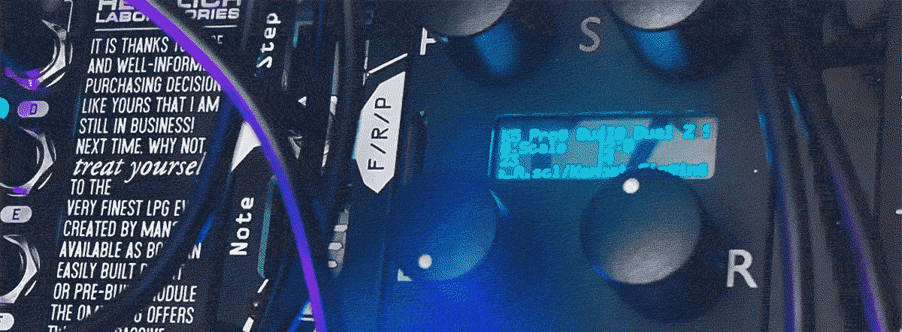
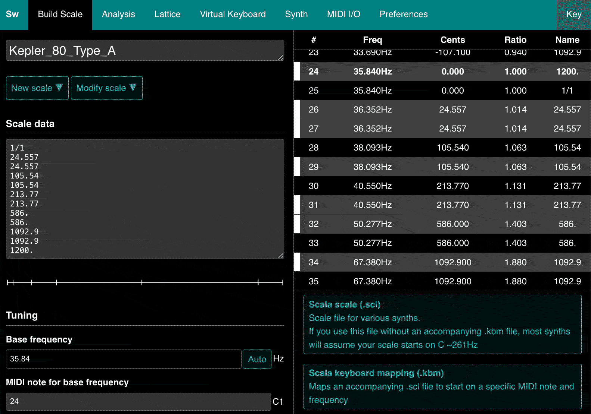
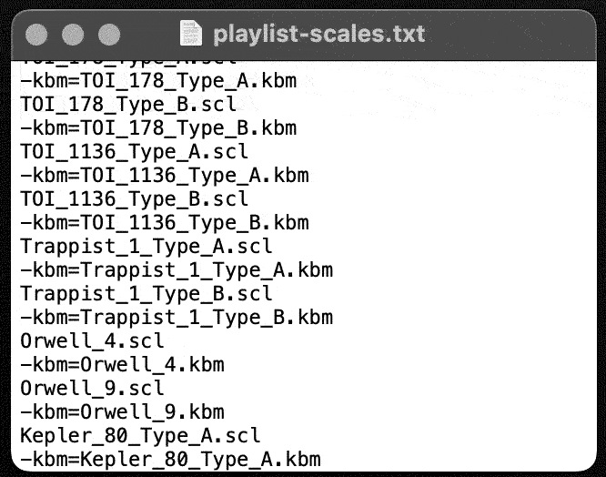

Making Scales for Disting
29/06/2024

I’ve recently been experimenting with making my own scales to use with the quantiser algorithm on Disting. It is pretty quick and easy to do, though I did have to troubleshoot some parts out along the way, so thought I’d share my instructions in case it helps anyone else.
There’s also a video version of the instructions available here:
Contents
1. What scale to make?2. Working out the intervals and midi note mapping
3. Creating .scl and .kbm files
4. Updating the playlist
5. Testing them out
Handy Resources
Reference chart for midi notes and frequenciesFrequency to Cents Interval Calculator
Scale Workshop .scl and .kbm Free Online Tool
1. What scale to make?
The first thing to figure out is what scale you’re going to make. If you need some inspiration, check out Levi McClain's video about scales made from octaves divided into 31 notes. One thing to consider is whether you want to create a tuning, an alternative to the normal 12-tones of an octave, or whether you want to make a scale, which would be a smaller group of notes- this depends on how you're going to play it in the end, whether you're going to use a keyboard or sequencer to dial in notes or something less precise. You can find loads of scales here if you're not making your own system from scratch.
Inspired by the Pythagorean idea of the music of the spheres, I wanted to make some scales based on relationships between planets and figured exoplanetary systems could be some fun material to mess around with. I looked up some measurements on wikipedia pages for systems containing between 5 and 8 planets, I then doubled the numbers til they fell within an audible frequency range.
2. Working out the intervals
The next step was to decide what midi notes I wanted the notes to map to. This is a handy reference chart for midi notes and frequencies. I started with the planet closest to its star in a particular system, mapping that to the closest C to its frequency and then spaced the other notes across the octave as I saw fit (I would later double up notes to fill the gaps as I'd rather have some keys playing the same note than some not sounding at all). This is what I ended up with:
| Planet | Distance | Midi | Frequency | Cents |
|---|---|---|---|---|
| f | 0.0175 | C1 | 35.84 | 0. |
| g | 0.142 | D1 | 36.352 | 24.557 |
| d | 0.0372 | E1 | 38.0928 | 105.54 |
| c | 0.0792 | F1 | 40.5504 | 213.77 |
| e | 0.0491 | G1 | 50.2784 | 586. |
| b | 0.0658 | B1 | 67.3792 | 1092.9 |
| C2 | 71.68 | 1200. |
Next was to work out the intervals between my notes. I found the easiest way to do this was using a frequency to cent calculator using the first note as the root, then using the calculator to work out the interval between that and each other note in my scale.
3. Creating .scl and .kbm files
This part is actually relatively straightforward. The Scala .scl file tells your quantiser what your intervals are, then the Keyboard Mapping .kbm file defines the root note and how you want your notes to map to normal keyboard notes. Some quantisers will work with just the .scl file, in which case the root note will be whatever your oscillator is tuned to. Disting requires both files to be present to work and it’s actually really handy as you can have multiple tuning files with differently-tuned root notes.
Scale Workshop is a free online tool for creating these files created by microtonal maestro Sevish (see Sevish's website for some free scala and kbm files). First, enter your Base frequency i.e. your root note, the first note of your scale and then enter the midi note that you want it to be.

Then paste in your intervals into the Scale Data box. There are different possible formats for entering your intervals, for example you can enter them as ratios like 3/2 which might be easiest if you you’re entering in an existing microtonal scale that you’ve found online.
If you’re entering them as cents, you need to include a decimal point, even if there are no numbers after the decimal. Because you’re entering intervals, the first number should be the interval between your root and the second note of your scale, then, if you’ve designed it to repeat at a normal octave, the last interval would be 1200. cents. Check the table display on the right-hand side to make sure that the notes are mapped as you had planned it.
You can test your scale within Scale Workshop by playing it with your computer keyboard or even a midi keyboard if you've got one to hand.
Then all you need to do is give your scale a name and then click Scala scale and Scala keyboard mapping to export your files. An awesome feature is that it automatically creates a URL for your scale so you can share it- you can find the URL in the .scl file itself if you open it up in a text editor. Here's the scale I created for this example.
4. Updating the playlist
If you’re using Disting, an important final step is to update the scale playlist file on the SD card. On a new line, you just add the name of the .scl file and on the line directly under it, enter -kbm= and the name of the .kbm file.

NOTE: If you’re copying and pasting the names from elsewhere, be careful to not copy any hidden characters or you may encounter issues. I copied a bunch of filenames directly from the files on the mac in one go and something hidden was preventing Disting from understanding them as separate files, until I tried again but first pasted into an online make plain text site before pasting onto the playlist file.
5. Testing them out
I used algorithm K5 on Disting Ex in Dual Mode (I usually use the other half as a sample player) and it works brilliantly, especially with the automatic trigger out on Disting that triggers whenever it detects a note change.
For $20 you can get the Scalar VCV rack module if you have a hybrid set up or want a quick way of testing of your scales. It doesn't accept .kbm files though so you need to tune your oscillator to the roote note manually by right-clicking the oscillator and pasting in the frequency.
And that’s it. See below for a couple of videos of a scale I made based on the 55 Cancri exoplanet system. Hopefully this is helpful for someone out there, if so, let me know! Feel free to get in touch if you have any questions or get stuck on any of it.